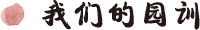
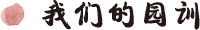
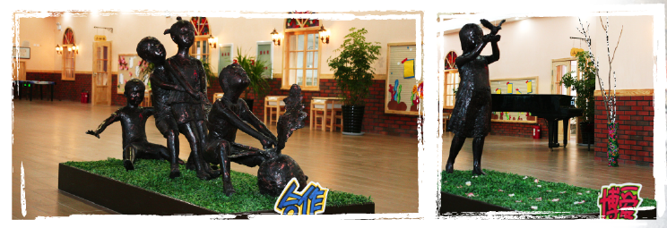
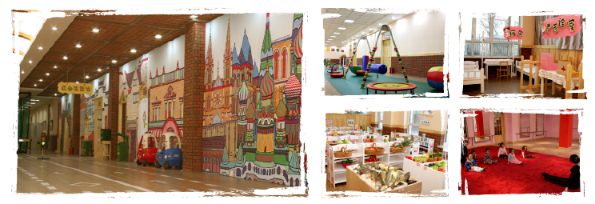

师大春天幼儿园（以下简称幼儿园）是沈阳师范大学与沈阳春天投资有限公司合作创办的一所高品质、现代化幼儿园。
幼儿园总投资5000余万元，坐落于沈阳师范大学校内。幼儿园占地10000多平方米，建筑面积8200平方米，建筑整体为北美风格，最大容量18个班，可接收幼儿540名。
师大校内中的辽宁古生物博物馆、世界著名雕塑大师司徒安雕塑园、体育文化场所、野生动物园、树林、池塘、果园、绿地都为幼儿园提供了辅助性功能场所。常年不断的戏曲、音乐、舞蹈表演和书画展为幼儿园提供了不可多得的艺术欣赏和教学载体.大量的留学生不仅为幼儿提供了学习外语和交流条件,也成为幼儿了解多元化世界文化的平台。
作为实验园，根据国家确立的幼儿教育发展规划，积极探索符合中国国情、面向未来、科学化的幼教理念模式和实践体系。
——确立了“关系今天、关注明天”的核心价值观
——适应儿童- - -尊重成长规律、关注天赋差异、呵护童心童趣；
——适应自然- - -适应自然环境、增强生存能力、探索自然奥秘；
——适应社会- - -形成社会认知、感受社会文明、实践社会生活；
——适应未来- - -注重奠定基础、探索未来需求、关注个体特征；
 

围绕“天赋是种子、环境是土壤、榜样是春雨、爱心是阳光、自由是空气、养育是耕耘”的认知，幼儿园在环境、条件和课程设置上，体现了深刻内涵和全新模式。
幼儿园的建筑、功能和设施设备配备标准，目前在辽宁省范围内到了一流水平，而且独具特色，幼儿园有一千多平方米的室内功能性长廊,设置了“美工创意坊”“科学实验坊”“社会体验坊”“生活实践坊”“拓展训练坊”“大型游乐坊”“歌舞剧坊”“体育竞技坊”八个活动单元,为幼儿全面认知和实践提供了必要的场所和设施设备。
为儿童的科学、艺术、游戏、体育、生活体验和实践提供了场所和设施设备。幼儿园户外园区的假山、瀑布、鱼塘、果岭、菜园、动物家、大型户外儿童游戏设施以及儿童足球场、网球场、篮球场等，为儿童的全面健康发展提供了必要的硬件条件。幼儿园将建立自由选项、自由选课制度，不仅为发现和激活孩子的特长提供了制度上的保证，也为幼儿自主性的发展提供了机会。幼儿园注重孩子的素质教育和特长教育，力争为每个幼儿提供更好的个性化教学方案，坚决杜绝小学化倾向，使得孩子不仅仅有一个幸福、温暖的童年，还有一个健康、进取、可持续发展的美好未来。
家庭和家长是幼儿健康成长的第一要素,为此幼儿园设立了“家长委员会”,作为幼儿园与家长沟通的载体；设立了“家长学堂”作为提升家长树立正确的幼教理念和方法的平台，设立了“儿童成长咨询服务中心”作为为家长提供幼儿教育实践的咨询服务窗口。
幼儿园遵循着以教研促教学的理念，使幼儿园不仅作为社会服务的载体，也是师大的学术研究和教学实践基地。师大的学前教育专业是国家级示范专业，拥有一支在国内具有影响力的教授专家团队，同时作为师大所属部门的辽宁省基础教育研究培训中心的学前教育处负责全省的学前教育研究指导和教师培训，都在不同角度为幼儿园的健康发展发挥特殊作用。也将引领幼儿园在挖掘、继承、融合原有的幼教模式基础上，开创出一条符合中国国情、适合幼儿全面健康发展科学化的幼教道路。